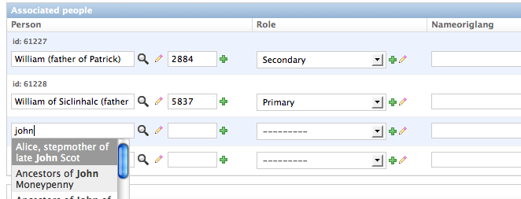

Autocomplete in Django #2
[Update 14/09/11 : If you’re using Django 1.3 you can also skip point -4- below, as the ‘cut’ filter is included in Django by default now!]
[Update 15/2/10 : I added a small example that shows how to make this work with Inlines too, see point 6 below…]
[Update 18/10/09 : please note that the code has been tested on django1.1! Check the comments below if you’re running 1.0…]
In a previous post I was talking about using autocomplete fields in django’s admin, and how this feature was missing for inlines. I sorted this out and put together an essential bunch of files you can easily include in your project to that purpose. Nothing final or too wonderful but just a hack that’ll get you going…
You can download it here (in the image below you can see the autocomplete for Inline fields in action).

In order to use it, here’re a few simple steps:
1. Put the autocomplete_admin.py file somewhere in your application folder
2. Add the ‘autocomplete’ folder with the media files to your usual media folder
3. Add the ‘admin/autocomplete’ folder to your templates folder
4. [Only if you use a version of django less recent than 1.3] Add the extrafilters.py file in the templatetags directory of your application (or just add its contents to your custom template tags if you already have some). All is needed is the ‘cut’ filter, for making the code used in the inline-autocomplete form javascript-friendly. Basically the automatically generated code in the case of inlines wasn’t valid javascript because of the use of dashes which in js are interpreted as minus signs. There can be lots of solutions for this problem, but that’s what worked better for me (moreover the cut filter can be used elsewhere).
5. When defining your models admin, import the relevant admin and use it:
..... from myproject.mypackage.autocomplete_admin import FkAutocompleteAdmin ..... ..... class Admin (FkAutocompleteAdmin): related_search_fields = { 'person': ('name',)} .....
6. Mind that if you’re using inlines and want the autocomplete to work there too, you’ve got to make sure that you’re subclassing an AutocompleteInline class on both a) the inline admin class, and b) the main admin class of the model the inline is attached to. Example:
class Document(someUpperClass): """a usual model """ authors = models.ManyToManyField(Person, through='AssocDocPerson',) # ******************************************** # if you want the related inline autocomplete to work, the following admin must be one of # ForeignKeyAutocompleteAdmin or AutocompleteModelAdmin or NoLookupsForeignKeyAutocompleteAdmin # ******************************************** class Admin (AutocompleteModelAdmin): inlines = (AssocPersonDocInline, ) fieldsets = [ ('Administration', {'fields': ['editedrecord', 'review', 'internal_notes', ('created_at', 'created_by'), ('updated_at', 'updated_by') ], 'classes': ['collapse'] }), # etc. etc. class AssocPersonDocument(someUpperClass): document = models.ForeignKey('Document') person = models.ForeignKey('Person') # etc. etc. class AssocPersonDocInline(InlineAutocompleteAdmin): model = AssocPersonDocument extra = 4 related_search_fields = { 'person': ('persondisplayname',), }